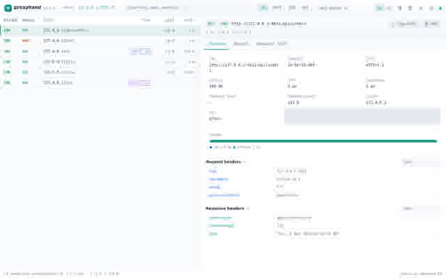
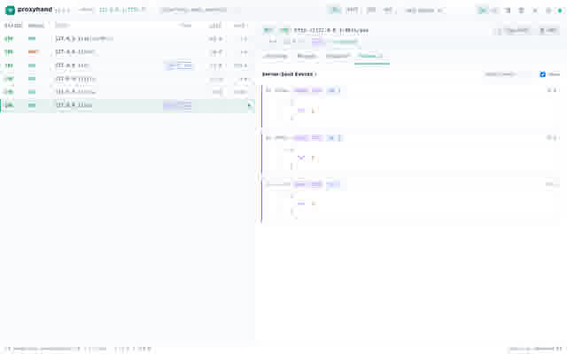
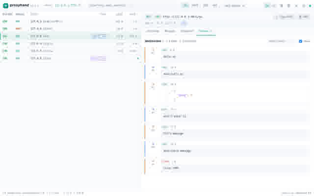
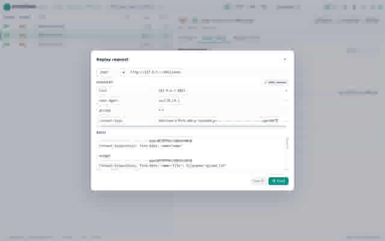

⇅
One port for everything
Plain HTTP, HTTPS via CONNECT + MITM, and the web UI all share one port. Open the UI on the very port you proxy on.
HTTP, HTTPS, SSE and WebSocket — on one port, in one static binary. Certificates are minted on the fly, and events and frames appear the moment they arrive instead of after a buffered blob.
No accounts, no cloud, no plugins to install. Runs on your machine and shows you the traffic.
Plain HTTP, HTTPS via CONNECT + MITM, and the web UI all share one port. Open the UI on the very port you proxy on.
Events and frames stream in the instant they arrive — event names, retry, comments, opcodes, both directions interleaved. No buffered blob.
An ECDSA root CA, per-SNI leaf certs minted on demand, and a shield button that tells you exactly how to trust it per platform.
One click from the list. Edit method, URL, headers and body in a Postman-style composer — JSON formatted, forms as a field table — and send it back through the same TLS path.
Line-numbered JSON tree, form field tables, inline image previews, gzip/br/deflate decoded on the fly, binary downloadable, truncation flagged.
Export one flow or everything as HAR 1.2 with decoded bodies; copy any request as a cURL command. Pause and clear capture without losing live streams.
Light theme by default, English or Chinese.






Prebuilt binaries for every platform, static Linux builds, Docker, or build from source.
curl -LO https://github.com/xiegoudan/proxyhand/releases/latest/download/proxyhand-amd64-linux
chmod +x proxyhand-amd64-linux
sudo mv proxyhand-amd64-linux /usr/local/bin/proxyhandPrebuilt assets: proxyhand-amd64|arm64-linux · .exe for Windows x64 / ARM · .deb · .rpm · macOS (Intel & Apple silicon). Linux builds are static — they run on Alpine too.
docker run --rm -p 8899:7747 -v proxyhand_data:/data xiegoudan/proxyhand:latestThe container listens on 7747; publish any host port. The root CA lives on the volume, so trusted clients keep working across upgrades.
cargo install --git https://github.com/xiegoudan/proxyhand
proxyhand # proxy + UI on http://127.0.0.1:7747The web UI is embedded in the binary, so there is nothing else to run.
certutil -addstore -f "ROOT" ca.crt (Windows) ·
update-ca-certificates (Debian) · the shield button in the UI has the full table.